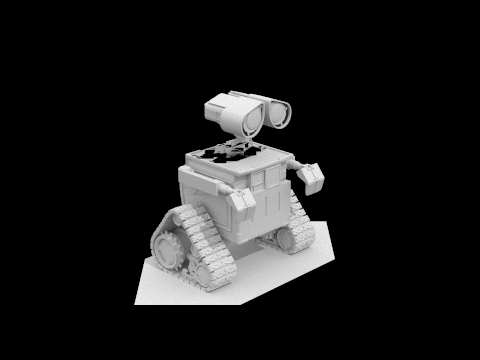
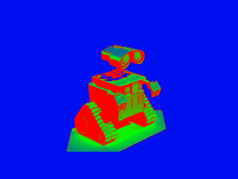
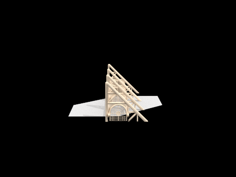
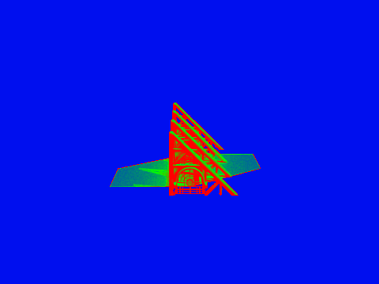

Explain adaptive sampling. Walk through your implementation of the adaptive sampling
Adaptive sampling improves rendering efficiency by reducing the number of samples taken for pixels that converge quickly while continuing to invest more samples in pixels that remain noisy. Instead of forcing every pixel to use the same fixed sampling budget, it monitors how stable the estimated pixel color is over time and stops early once that estimate has converged. This makes the renderer spend less work on smooth, low-variance regions and more work on difficult regions such as edges, shadows, reflections, and indirect lighting.
In our implementation, adaptive sampling was added in raytrace_pixel(). For each pixel, we keep running
sums of the illumination values, s1 and s2, as samples are accumulated. Every
samplesPerBatch samples, we compute the sample mean and variance:
From this, we estimate a 95% confidence interval for the pixel value using:
\[ I = 1.96 \cdot \frac{\sqrt{\sigma^2}}{\sqrt{n}} \]If the interval is small enough relative to the mean, meaning \( I \leq \text{maxTolerance} \cdot \mu \), then the pixel is considered converged and sampling stops early. Otherwise, the pixel continues to receive more samples until it either converges or reaches the maximum sample count. In other words, pixels whose colors stabilize quickly terminate early, while noisy pixels continue sampling until the estimate becomes reliable.
After sampling finishes, the final pixel color is computed by averaging the accumulated radiance using the
actual number of samples taken for that pixel rather than the global maximum. That per-pixel sample count is
also stored in sampleCountBuffer, which is later used to generate the _rate images.
These rate images visualize how sampling effort is distributed across the scene, making it easy to see that
complex regions receive more samples and already-stable regions receive fewer.
Pick two scenes and render them with at least 2048 samples per pixel.
Wall-E Scene


Building Scene

